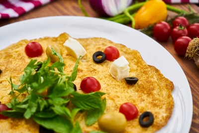

| Nuotrauka | Mums reikės | Gaminimo eiga |
|---|---|---|
|  |
|
Pradedame: Išplakti kiaušinius, supilti pieną, suberti prieskonius ir viską gerai išmaišyti. Paruoštą masę pilti į įkaitintą keptuvę ir uždengti dangčiu. Pakepus 2 minutes apversti. Iškepus dedame į lėkšte ir papuošiame baziliku, pomidoriukais bei alyvuogėmis. Skanaus!!! |
Daugiau receptų rasite čia.